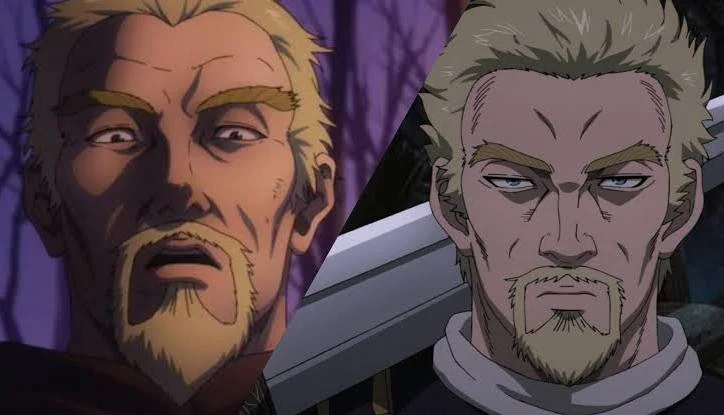

Askeladd é o principal antagonista da primeira temporada de Vinland Saga. Ele é um líder mercenário genial, pragmático e um dos personagens mais complexos da obra. 🌍 Origem Mestiço: Filho de um guerreiro viking com uma nobre galesa escravizada. Passado difícil: Cresceu na pobreza e ganhou o apelido de "Askeladd" (coberto de cinzas). Linhagem real: Descendente do Rei Arthur, o que o fez odiar os vikings e amar o País de Gales. Vingança: Assassinou o próprio pai na adolescência para vingar o sofrimento de sua mãe. ⚔️ Habilidades Mente estratégica: Manipulador brilhante e mestre em ler a psicologia humana. Esgrima de elite: Espadachim veloz, capaz de derrotar guerreiros experientes com facilidade. Poliglota: Fluente em nórdico antigo, galês e latim, facilitando suas negociações políticas. 💡 Curiosidades Herói folclórico: Seu nome é inspirado em um personagem esperto dos contos noruegueses. Protetor secreto: Toda a sua vida como pirata serviu para proteger Gales das invasões vikings. Sacrifício: Matou o Rei da Dinamarca e aceitou a morte para coroar o Príncipe Canute e salvar sua terra natal.